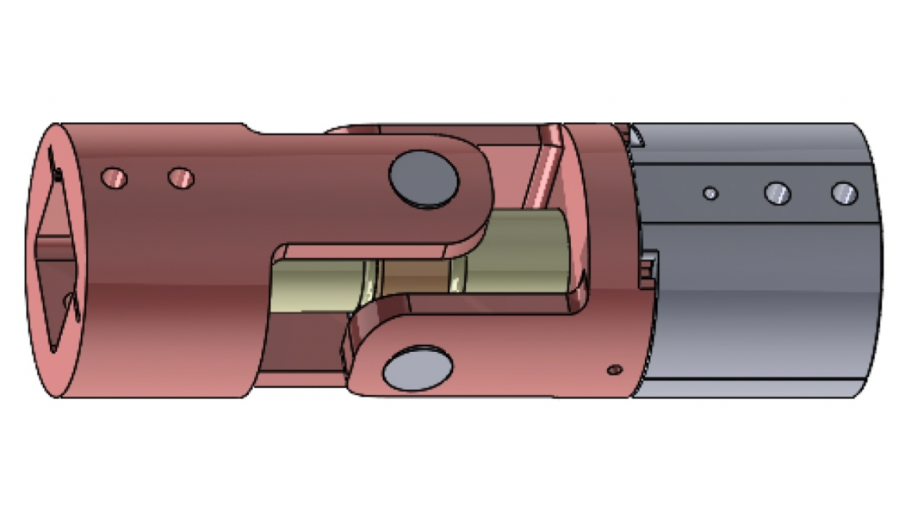
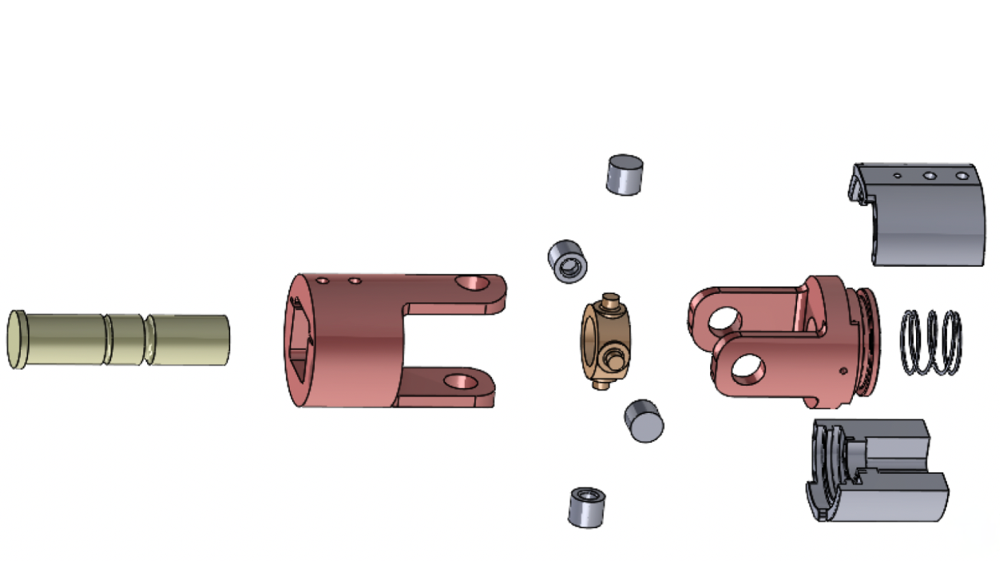

Senior Design
Reactive Road Sign System
Retrofit roadway sign mechanism designed to reduce storm damage using controlled rotation and sacrificial breakaway behavior. Includes wind-load modeling, FEA, prototype development, and destructive pin testing.